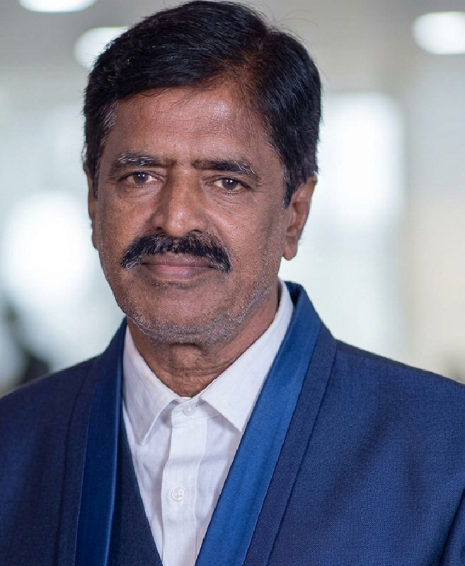

Promoter Founder & Director
Sakthivel Kandasamy
Chartered Accountant turned semiconductor entrepreneur. Founded Caliber Infotech in 2000, which grew to more than 150 people before its engineering division was acquired by Tessolve; Caliber Embedded Technologies in 2008; and Zepto Logic in 2018.
- 35+ years of experience
- Six Sigma Black Belt, Indian Statistical Institute
- Mentor to start-ups and young engineers